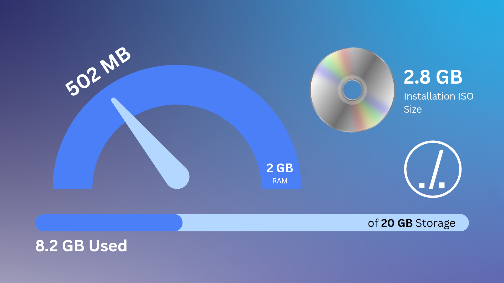
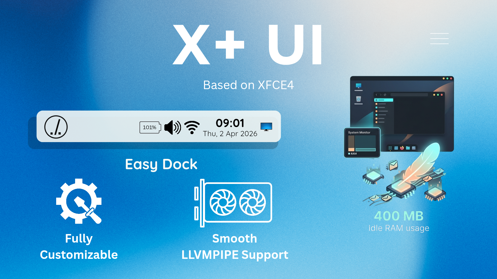

Minhy OS
Mini Hybrid Operating System
Arsitektur Debian yang tangguh bertemu dengan fleksibilitas Windows. Minhy OS dirancang dengan custom compatibility layer terintegrasi untuk mengeksekusi file ekosistem Linux murni maupun installer Windows (.exe/.msi) tanpa beban overhead sistem yang berat.
GET THE ISOWhat makes it unique?
Visualisasi antarmuka dan efisiensi sistem operasi masa depan

Lightweight Sejati
Hanya menggunakan RAM berkisar 400 MB dan memakan ruang penyimpanan sebesar 8 GB setelah instalasi awal. Efisiensi total tanpa mengorbankan performa inti.

X+ User Interface
Modifikasi menyeluruh pada Desktop Environment XFCE. Menghadirkan Easy Dock modern terpusat yang merangkum tray aplikasi aktif, kontrol sistem, dan notifikasi dalam satu baris panel melayang yang elegan.

Exclusive Icon Pack
Setiap aset ikon bawaan digarap ulang secara asimetris menggunakan palet warna seragam untuk menciptakan harmoni visual yang bersih dan memanjakan mata.
Hardware Requirements
Minhy OS dirancang khusus agar tetap responsif, bahkan pada perangkat dengan spesifikasi terbatas.
Official Hardware Resource
Uji Komparasi Efisiensi
| Metrik Pengujian | Minhy OS | Ubuntu Standard | Windows 11 |
|---|---|---|---|
| Idle RAM Consumption | ~500 MB | ~1.2 GB | ~2.5 GB+ |
| Base Installation Size | ~8 GB | ~15 GB | ~30 GB |
| Booting Speed (on HDD) | ~30 Detik | ~90 Detik | ~180 Detik |
* Hasil kecepatan booting nyata dapat bervariasi bergantung pada kesehatan sektor penyimpanan hardware Anda. Data komparasi dirangkum berdasarkan rilis snapshot pengujian tertanggal 28 Maret 2026.
* Windows adalah merek dagang terdaftar milik Microsoft Corporation. Minhy OS adalah proyek independen berbasis kernel Linux (Debian) dan tidak berafiliasi, disponsori, atau didukung oleh Microsoft Corporation.